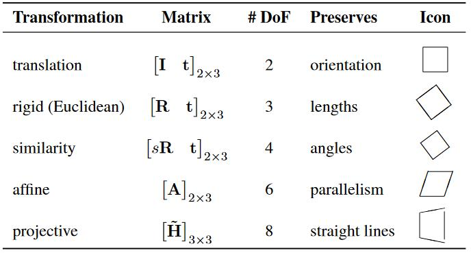
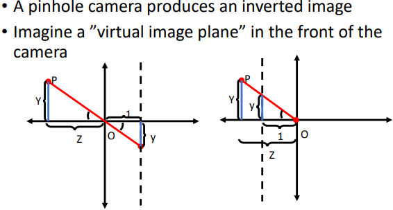
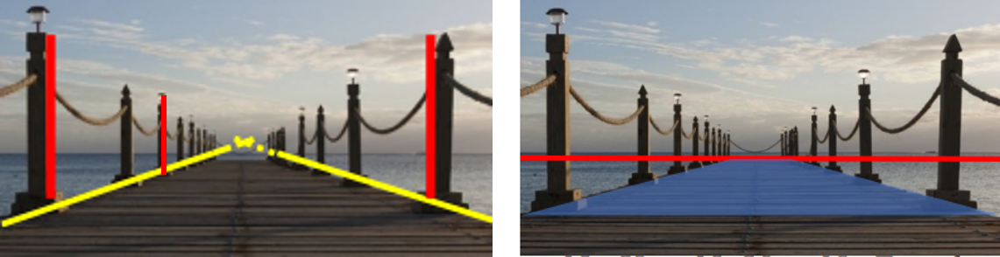
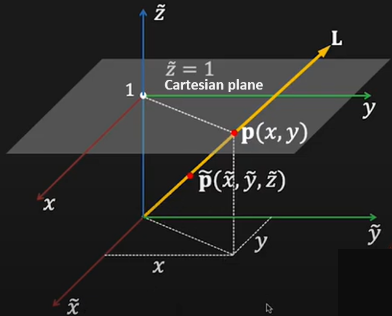
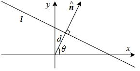

2D transformations
Contents
9.2. 2D transformations#
After the feature detection and description, we need to figure out transform between images
how can we transform images?
how do we solve for this transformation in given matches?
2D planar transformations#
Details from NUS CS4243 Computer Vision and Pattern Recognition

Scaling |
Rotation |
Translation \(\overline{\mathbf{x}}\) |
|---|---|---|
\[\begin{split}
\left[\begin{array}{ll}
s_{x} & 0 \\
0 & s_{y}
\end{array}\right]
\end{split}\]
|
\[\begin{split}
\left[\begin{array}{cc}
\cos \theta & -\sin \theta \\
\sin \theta & \cos \theta
\end{array}\right]
\end{split}\]
|
\[\begin{split}
\left[\begin{array}{ccc}
1 & 0 & t_ \mathbf{x} \\
0 & 1 & t_ \mathbf{y}
\end{array}\right]
\end{split}\]
|
Euclidean |
Similarity |
Affine |
|---|---|---|
\[\begin{split}
\left[\begin{array}{cc} \mathbf{R} & \mathbf{t} \\ \mathbf{0} & 1\end{array}\right]
\end{split}\]
|
\[\begin{split}
\left[\begin{array}{cc}s \mathbf{R} & \mathbf{t} \\ \mathbf{0} & 1\end{array}\right]
\end{split}\]
|
shear + similarity |
\[\begin{split}
\left[\begin{array}{ccc}\cos \theta & -\sin \theta & t_{x}\\ \sin \theta & \cos \theta & t_{y}\\ 0 & 0 & 1 \end{array}\right]
\end{split}\]
|
\[\begin{split}
\left[\begin{array}{ccc}a & -b & t_{x} \\ b & a & t_{y} \\ 0 & 0 & 1 \end{array}\right]
\end{split}\]
|
\[\begin{split}
\left[\begin{array}{ccc}
a_{11} & a_{12} & a_{13} \\
a_{21} & a_{22} & a_{23} \\
0 & 0 & 1
\end{array}\right]
\end{split}\]
|
Intro of Homogeneous Coordinates
Introduction of \(\overline{\mathbf{p}} = (x, y, 1)\) in translation
Excellent videos: Projective geometry from UNSW Prof NJ Wildberger

Interesting phenomenons originated from this 
Farther away objects are smaller
Parallel lines converge at a point.
Parallel planes converge! 消失的地平线
Cartesian -> Homogeneous
Understand the 2D projection in the 3D homogeneous coordinate.
 Cartesian plane overlaid in the homogeneous coordinate
The \(\color{orange}{homogenous}\) (scale invariant) coordinates of a 2D point
are
Image a line from the origin through \(\widetilde{\mathbf{p}}\)
The third coordinate \(\widetilde{z}\) is fictitious(虚构) such that:
In case \(\tilde{z}=0\) -> “point at infinity”
The homogenous representation of a 2D line: $\( \mathbf{\widetilde{x} \cdot \mathbf{\widetilde{l}} = ax+by+c=0} \)$
Where \(\mathbf{\widetilde{l}=(a,b,c)}\) could be normalized as \(\mathbf{\widetilde{l}=(\mathbf{n}, d)}\)
 2D line equation
Computing homographys#
Task: given a set of matching features/points between source and destination images, find the \(\color{orange}{\text{homography H}}\) that best fits.
8 degrees of freedom requires 4 matches. For a given pair i of corresponding points:
Rearrange the terms：
Linear equation, fixing \(h_{33} = 1\):
Normal equation
Solution to \(\mathbf{A x}=\mathbf{b}\):
\(\mathbf{A}\) is not square and so has no inverse.
\(\left[\mathbf{A}^{\mathbf{T}} \mathbf{A}\right]^{-\mathbf{1}} \mathbf{A}^{\mathbf{T}}\) is the pseudo-inverse of M
Pseudo-inverse gives the least squared error solution
SVD explanation
Where \(\mathbf{A}=\mathbf{U S V}^{T}\), \(\mathbf{U}\) and \(\mathbf{V}\) are orthonormal and \(\mathbf{S}\) is diagonal. And the equation could be furthered developed as:
Conclusion: Eigenvector \(\mathbf{h}\) with smallest eigenvalue \(\lambda\) of matrix \(A^{T} A\) minimizes the loss function \(L(\mathbf{h})\).
OR since \(\mathbf{S}\) is diagonal and the eigenvalues are sorted in descending order, let \(\mathbf{y}=[0,0, \ldots, 1]^{T}\) would minimize \(\|\mathbf{S y}\|\). So the solution \(\mathbf{h}=\mathbf{V} \mathbf{y}\) would be the last column vector of \(\mathbf{V}\).